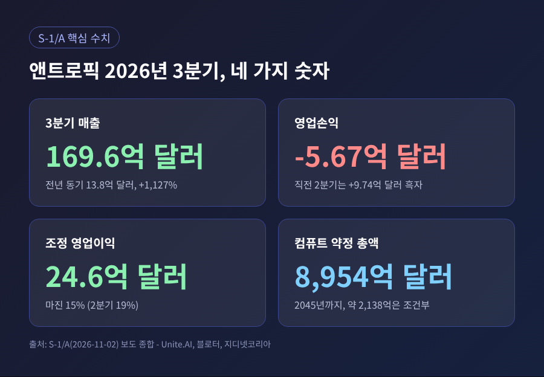
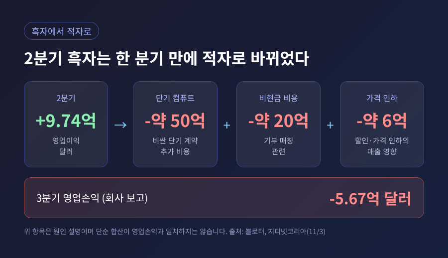
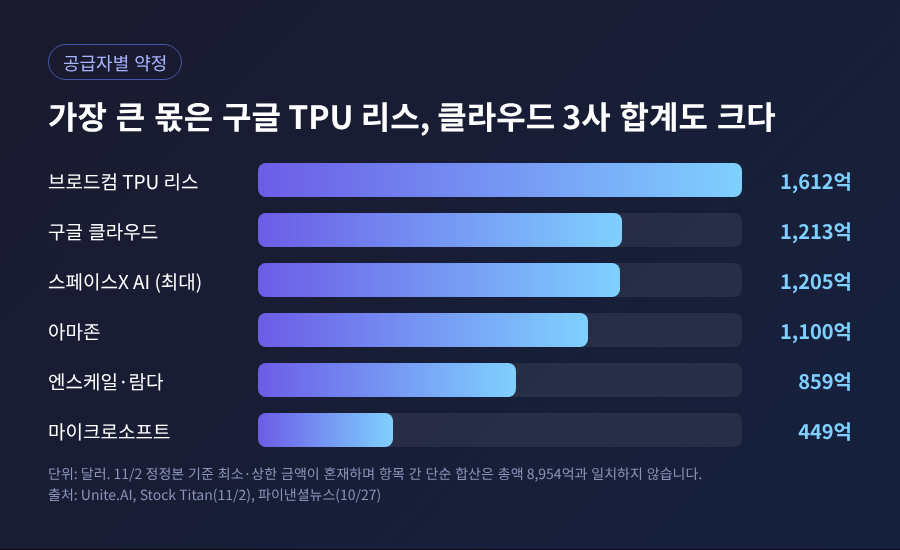
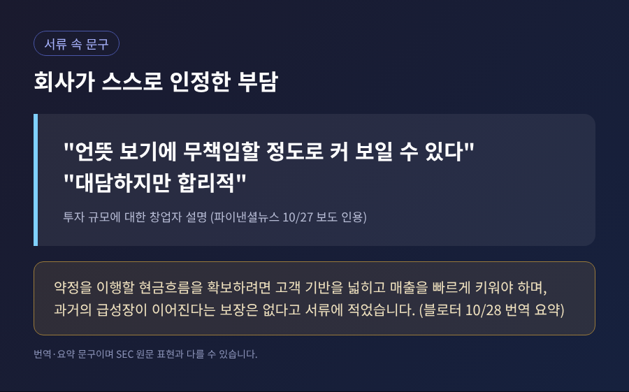
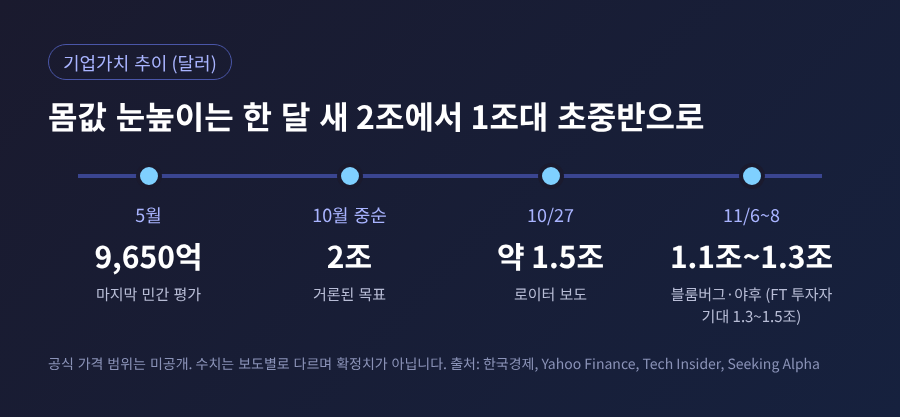

앤트로픽 IPO 정정 신고서, 매출 12배와 8954억 달러 약정의 명암

오늘은 클로드를 만드는 앤트로픽이 11월 2일 미국 증권거래위원회에 낸 수정 증권신고서(S-1/A)를 정리해 보려 합니다. 3분기 매출은 약 170억 달러로 1년 전의 12배가 됐지만, 영업은 다시 적자로 돌아섰습니다. 동시에 앞으로 2045년까지 이어질 컴퓨팅 약정이 약 8954억 달러로 공개됐고, 시장이 매기는 몸값은 한 달 새 크게 흔들렸습니다.
■ 무슨 일이 있었나
앤트로픽은 10월 26일(미국 현지) 나스닥 상장을 위한 S-1을 공개했습니다. 티커는 ANT, 주관사는 골드만삭스와 모건스탠리입니다. 6월 1일에 비공개 초안을 낸 뒤 넉 달 만의 공개였습니다.
일주일 뒤인 11월 2일, 회사는 3분기까지의 실적을 담은 수정본을 제출했습니다. 핵심 수치는 다음과 같습니다.

- 3분기 매출은 169억 5600만 달러입니다. 전년 동기의 13억 8200만 달러에서 1,127% 늘었습니다.
- 영업손익은 5억 6700만 달러 적자입니다. 직전 2분기에는 9억 7400만 달러 흑자였습니다.
- 순손실은 232억 9100만 달러로 커 보이지만, 이 가운데 219억 달러가량은 전환사채와 파생상품의 가치 평가에서 생긴 비현금 비용입니다.
- 1~9월 누적 매출은 332억 달러, 영업현금흐름은 65억 달러 플러스입니다.
수치는 영문 매체 유나이트AI와 스톡타이틀, 국내 블로터·지디넷코리아 보도가 서로 맞습니다. 다만 저는 SEC 원문을 직접 열어보지 못했고, 이 글의 공시 수치는 이들 보도를 통해 확인한 것임을 밝혀 둡니다.
■ 적자로 돌아선 이유
예전엔 한 분기 흑자가 곧 체질 개선처럼 읽혔습니다. 이번에는 그 흑자가 한 분기를 넘기지 못했습니다. 회사가 밝힌 원인은 두 가지입니다.
첫째, 단기 컴퓨트 계약입니다. 장기 계약으로 설비가 들어오기 전에 수요를 감당하려고 값이 더 비싼 단기 물량을 쓰다 보니 약 50억 달러가 더 들었습니다. 둘째, 기부 매칭 프로그램과 관련된 비현금 비용 약 20억 달러입니다.
여기에 가격 압박도 있었습니다. 블로터와 지디넷코리아에 따르면 신모델 가격 인하와 일부 고객 할인으로 3분기 매출이 약 6억 달러 줄었습니다. 오픈AI의 저가 모델, 중국발 개방형 모델과의 경쟁이 배경으로 언급됩니다.

그렇다고 사업이 나빠졌다고 보기는 어렵습니다. 회사는 같은 기간 매출이 1,127% 늘 때 컴퓨트·인프라 비용은 382% 늘었다며, 연산 효율이 개선됐다고 설명합니다. 비용 항목을 뺀 조정 영업이익은 24억 6300만 달러, 마진 15%입니다. 2분기의 19%보다는 낮아졌습니다.
회사의 이런 해석은 어디까지나 회사의 주장입니다. 상반기 기준으로 컴퓨트 비용이 매출의 201%에서 55%로 내려왔다는 점은 공시 수치로 확인되지만, 3분기에 마진이 다시 얇아진 것도 사실입니다.
■ 진짜 쟁점은 8954억 달러
이번 정정본에서 가장 큰 숫자는 매출이 아니라 약정입니다. 컴퓨트와 인프라 관련 구매·리스 약정은 약 8954억 달러입니다. 한화로 1,200조 원 안팎입니다.
시기별로 나누면 이렇습니다.
- 2030년 말 이전에 약 4,475억 달러가 집행됩니다.
- 2026년 9월 말부터 12개월 안에는 약 698억 달러입니다.
- 나머지는 대부분 2031년부터 2045년 사이입니다.
- 이 가운데 약 2,138억 달러는 해지권이나 금융·규제 승인 같은 조건에 묶여 있어, 일부는 피할 수 있습니다.
공급자별로 보면 구조가 더 선명합니다.

구글 TPU를 브로드컴이 공동 개발해 임대하는 5년짜리 장비 리스가 약 1,612억 달러로 가장 큽니다. 구글 클라우드는 최소 약 1,213억 달러, 아마존은 최소 1,100억 달러, 마이크로소프트는 최소 449억 달러입니다. 스페이스X의 AI 부문은 최대 1,205억 달러이며, 완전 가동되면 월 임대료가 약 31억 달러라고 파이낸셜뉴스는 전했습니다.
숫자가 보도마다 조금씩 다른 점도 짚어야 합니다. 10월 26일 첫 공개 때는 "6,000억 달러 이상"(로이터 인용)이라고 했고, 연합뉴스 계열은 "8,000억 달러 이상"이라고 썼습니다. 11월 2일 정정본에서 8954억 달러가 됐습니다. 집계 범위와 시점이 다른 데다, 9월 30일 이후 새로 맺은 약 1,002억 달러가 더해졌기 때문으로 보입니다. 구글 약정도 첫 공개 때 보도는 약 1,145억 달러였고 정정본 기준은 약 1,213억 달러입니다. 증가 사유는 확인되지 않았습니다. 최신 기준은 정정본입니다.
■ 왜 이 약정이 부담으로 읽히나
문제는 약정의 성격입니다. 상당수가 쓰든 안 쓰든 최소 금액을 내는 방식입니다. 구글과 아마존 계약에는 사용이 모자라면 차액을 정산하는 조항이 있고, 마이크로소프트 약정은 상대방의 중대한 위반이 아니면 해지할 수 없다고 유나이트AI는 정리했습니다.
반면 회사의 매출은 대부분 사용량에 따라 발생합니다. 장기 계약으로 묶인 매출이 아닙니다. 블로터가 짚은 대로 고객이 지출을 줄이면 매출이 먼저 줄고, 인프라 비용은 단기간에 줄이기 어렵습니다.
한 가지 더 있습니다. 아마존, 구글, 마이크로소프트는 앤트로픽의 주주이기도 합니다. 한국경제는 투자금이 클라우드 사용료로 돌아오는 구조가 상장 뒤 재무제표로 검증받게 됐다고 평가했습니다.
회사도 이 부담을 감추지 않습니다. 창업자 설명은 투자 규모가 "언뜻 보기에 무책임할 정도로 커 보일 수 있다"고 인정하면서, 접근법은 "대담하지만 합리적"이라고 적었습니다. 서류에는 과거의 급성장이 이어진다는 보장이 없다는 경고도 담겼습니다.

방어선도 있습니다. 9월 30일 기준 유동성은 약 1,466억 달러입니다. 현금 956억 달러, 단기투자 363억 달러, 쓸 수 있는 리볼버 약 148억 달러를 합한 값이고, 회사는 향후 12개월의 운영자금과 리스, 설비투자를 감당할 수 있다고 밝혔습니다. 다만 그 뒤의 자금은 매출 성장과 추가 조달에 달려 있습니다.
■ 몸값은 한 달 새 어떻게 변했나
상장 몸값은 서류보다 시장 분위기에 더 민감하게 움직였습니다.

- 5월의 마지막 민간 평가는 9,650억 달러였습니다.
- 10월 중순에는 2조 달러가 거론됐습니다.
- 10월 27일 로이터는 약 1.5조 달러라고 전했습니다. 한국경제는 이를 2조보다 25% 낮은 수준으로 설명했습니다.
- 11월 6일 야후파이낸스는 투자자들이 1조~1.3조 달러를 검토한다고 보도했습니다.
- 11월 8일 테크 인사이더는 블룸버그를 인용해 1.2조~1.3조 달러, 일부는 1.1조 달러까지 이야기한다고 적었습니다. 같은 날 시킹알파는 FT를 인용해 기관의 기대치가 1.3조~1.5조 달러라고 전했습니다.
소스마다 범위가 겹치지만 일치하지는 않습니다. 공식 가격 범위는 아직 공개되지 않았고, 조달 규모도 확정되지 않았습니다. 블룸버그는 스페이스X의 862억 달러에 맞먹거나 더 큰 규모를, FT는 800억~1,000억 달러대를 전한다는 정도가 현재까지의 보도입니다. 블룸버그 쪽도 "최종 결정은 없다"고 했습니다.
흔들림의 배경에는 11월 5일의 시장 급락이 있습니다. 야후파이낸스는 중간선거 이후 새 의회 다수가 데이터센터 확장과 AI에 미칠 영향에 대한 불안이 겹쳤다고 전했습니다. 예측시장의 12월 이전 상장 확률은 80%에서 50% 안팎까지 내려갔다가, 시킹알파에 따르면 11월 8일 다시 80%를 넘었습니다. 오픈AI는 같은 시기 IPO를 2027년 초로 미룬 것으로 보도됐고, 프라이어 CFO는 "AI에 대한 수요는 실재한다"며 투자를 이어가겠다고 말했습니다.
■ 전망과 지켜볼 지점
이번 상장은 처음으로 공개 시장이 프런티어 AI 기업의 값을 매기는 일입니다. IPOX 리서치의 루카스 뮐바우어는 로이터를 통해 이 상장이 "선도적인 AI 연구기업의 기업가치를 평가하는 기준"을 세울 것이라고 말했습니다. 후속 상장과 AI 인프라 기업에 대한 신뢰에도 영향을 줄 수 있다는 뜻입니다.
앞으로 확인할 변수는 네 가지입니다.
- 추가 정정본에 담길 공모가 범위와 주식 수, 조달 규모
- 4분기 매출 성장률. 가격 인하 압력이 이어지는 가운데 성장이 얼마나 유지되는지
- 단기 컴퓨트 비용이 장기 설비 가동으로 얼마나 빨리 대체되는지
- 한 곳이 아닌 여러 클라우드 사업자에 걸친 약정이, 실제 사용량과 얼마나 맞아떨어지는지
지배구조도 함께 볼 대목입니다. 공동창업자 7명의 법인이 F종 1주로 의결권 50.1%를 쥐고, 장기이익신탁이 이사 과반을 선임합니다. 일반 투자자가 살 A종 주식의 발언권은 제한적입니다. 스톡타이틀은 이 밖에도 미 국방부의 공급망 위험 지정을 둘러싼 소송, 일부 지역의 데이터센터 건설 제한 가능성을 위험 요인으로 정리했습니다. 이 항목들은 2차 요약이므로 원문 확인이 필요합니다.
이 글은 공개된 보도를 정리한 해설이며, 특정 종목의 매수나 매도를 권하는 글이 아닙니다. 상장 조건이 바뀔 수 있는 만큼 투자 판단은 최종 투자설명서를 직접 확인한 뒤 하시길 권합니다.
정리하면 이렇습니다. 매출은 폭발적으로 늘었고, 그만큼 고정된 지출도 함께 쌓였습니다.
"성장이 약정을 앞서가는 동안은 버틴다."
이번 신고서가 투자자에게 던지는 질문은 결국 그 한 줄입니다. 속도가 멈추지 않는다면 8954억 달러는 설비가 되고, 멈춘다면 부담이 됩니다. 다음 정정본에서 어느 쪽에 더 가까운지 가늠할 단서가 나올 것입니다.